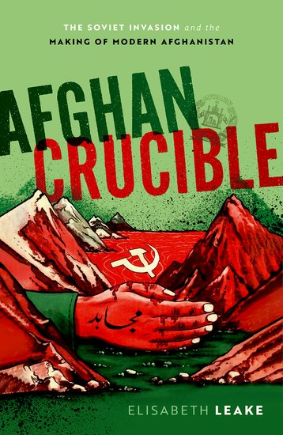

1Elisabeth Leake, Professor of Diplomatic History at Tufts University (USA), presents a global political history of the Afghan civil war and the Soviet invasion, covering the period from the late 1970s to the 1990s and offering insights into the crucial events before and after the main conflict.1 The author argues that the civil war was not only aggravated but also transformed into a global conflict by the 1979 Soviet invasion and the involvement of further powers supporting the resistance, most notably Pakistan, Iran, and the United States. These powers also took advantage of Afghanistan’s war to pursue their own interests. The war became a struggle over Afghan modernity, with socialist and Islamic visions emerging as the primary approaches to shaping the country’s future. The involvement of the United Nations High Commissioner for Refugees (UNHCR) in organising and governing millions of Afghan refugees in Pakistan reflected an effort to promote yet another version of modernity based on the Western ideas of citizenship and social responsibility. US leaders, notably, largely remained attached to the British colonial-era tropes portraying Afghanistan as “tribal” and fundamentally unmodern.
2The author skilfully traces the beginnings of Afghanistan’s pursuit of modernity earlier in the twentieth century, showing how the elites sought to reform the country. The eventual dichotomy between socialism and Islamism, however, was by no means predetermined but instead arose from two main sets of circumstances. The socialist alternative emerged mainly due to the unexpected success of the People’s Democratic Party of Afghanistan (PDPA), which came to power through the 1978 coup known as the “Saur Revolution” and the subsequent Soviet decision to provide thousands of specialists to help develop modern institutions modelled after those in the USSR rather than merely intervening militarily on behalf of the PDPA. The Islamist alternative took shape due to the combination of the Afghan Islamists’ involvement in the power struggles and the Islamisation of politics in Pakistan and Iran, with Iran, in particular, demonstrating that Islamism could serve as a foundation for modernisation following the success of the 1979 Revolution. The channelling of the US and much of the additional aid through Pakistan – and, on the ground, predominantly through Islamist political parties – further contributed to the popularity of Islamism among the refugees and resistance fighters. The chaos resulting from the conflict ensured that neither modernising vision endured. By the time the Soviets withdrew in 1989, the socialist state lay in ruins, the Islamist resistance was fractured, and millions of Afghans remained displaced, setting the stage for the rise of the Taliban.
3The book is masterfully structured, effectively reflecting its ambitious aim of providing a truly global, multi-perspective history, which Leake accomplishes with exceptional skill. The Prologue and Introduction outline this approach and establish the context of the Cold War and decolonisation, framing the work as a history of ideas about modernity and their political implementation. While ideas are explored throughout the text, the primary focus remains on the intricate political interactions that shaped the period.
4In Chapter 1, “Afghanistan’s Many Pasts”, Leake insightfully examines Afghanistan’s twentieth-century history until 1978. It explores the modernising efforts of its successive governments, such as those of Amanullah Khan and Mohammad Zahir Shah, and the development of political groups, especially at Kabul University. Until the 1970s, the ruling elites proposed singular visions of an independent state, contrasting with colonial subjugation and inspired by European modernisation. By the late twentieth century, however, conceptions of modernity had multiplied, influenced by global anti-colonial movements and the Cold War. These included alternatives like a reforming liberal monarchy, a socialist model, and an Islamic state independent of Western (including Soviet) influence. The chapter notes the tensions between the urban intellectuals and labourers, Pashtuns and other ethnic groups, as well as bureaucrats and qawm (a basic social unit) leaders. It also highlights the growing recruitment of the PDPA and Afghan Islamists, the shifts in dynamics in China, India, Pakistan, and Iran, and the end of the detente period between the USA and USSR.
5The PDPA’s rise to power during the “Saur Revolution” of April 1978, its ambitious modernisation plans, and their poor implementation are the focus of Chapter 2, “Kabul”. The chapter highlights the failures of land reform, setbacks in anti-religious and gender-equality policies, and the extreme violence employed by the PDPA, particularly through the KhAD (State Information Services), leading to resistance. Leake addresses the internal divisions between the hardline Khalq and the more moderate Parcham factions, the coup, and the leadership under Nur Mohammad Taraki, Hafizullah Amin, Babrak Karmal, and Mohammad Najibullah. With Afghanistan and the PDPA in disarray since early 1980, the party gradually shifted from its initial focus on building a modern, socialist Afghanistan to the mere goal of retaining power. The chapter could benefit from more attention to the realities of the PDPA rule outside Kabul, particularly where it managed to maintain power, as well as the experiences of professional groups like teachers. It could also examine why progressive groups like the Revolutionary Association of the Women of Afghanistan (RAWA) rejected the PDPA. Further attention to the discussions on how the situation could have been salvaged would be helpful, offering some insights into the paths the party did not take.
6In Chapter 3, “Moscow,” Leake examines the Soviet Union’s involvement in Afghanistan’s socialist modernisation. Thousands of Soviet citizens worked to create a modern Afghanistan modelled after the USSR, with many losing their lives in the process. The project ultimately failed as many Afghans rejected the externally imposed socialist state. Leake makes a crucial argument that the USSR’s involvement, influenced by its successes in Angola and Ethiopia, was not merely a military intervention but an attempt to establish infrastructures for socialism, reshape culture, education, economics, and industry, and create a functional state (p. 105). However, the inability to eliminate resistance and end the civil war rendered these goals unachievable and prevented the regime from gaining widespread acceptance. This chapter would benefit from a more detailed examination of the Soviet state-building efforts, exploring the planning of concrete measures and their execution in the field. Questions arise regarding whether the specialists were mainly of European descent or if Moscow involved modernisers from the Central Asian republics. Insights into the experiences of Soviet-educated Afghans and the development and reception of initiatives, such as including Afghans in the Soviet space program, would further enhance the analysis.
7The regional implications of the Soviet invasion and the positions of neighbouring countries, which sought to reshape the ideas of Afghan modernity, are examined in Chapter 4, “Islamabad.” Alongside the USA, Pakistan, Iran, and China did not recognise Karmal’s and Najibullah’s regimes, viewing the invasion as evidence of Soviet expansionism and internationalising the conflict with their response. For Pakistan, the war strengthened its alliances with China and the USA and advanced its Islamist aspirations. Muhammad Zia-ul-Haq’s government resolved the Pashtunistan issue (a conflict with Afghanistan) and benefited from the incoming foreign aid. The Iranian government saw the war as an opportunity to extend Ruhollah Khomeini’s ideas of Islamic revolution, while China sought to curb the Soviet expansion. Leake argues that Pakistan and Iran’s decision to support Afghan resistance through the Islamists encouraged the prospect of a future Islamised Afghanistan (p. 131). While the Pakistani perspective is examined thoroughly, more attention to Iran would certainly be welcome in this or another chapter.
8In Chapter 5, “Peshawar–Panjshir,” Leake focuses on the Afghan resistance, specifically the seven political parties based in and around Peshawar, Pakistan, which became significant due to their role in registering refugees and distributing aid. The chapter effectively reconstructs the modernist visions of an Islamic state promoted by the two main Islamist parties: Jamʿiyyat-i Islami Afhanistan (Islamic Society of Afghanistan), led by Burhanuddin Rabbani, and Hizb-i Islami Afhanistan (Islamic Party of Afghanistan), led by Gulbuddin Hekmatyar. Hekmatyar’s vision of a single-party, hierarchical state resembling that of the PDPA contrasted with Rabbani’s more inclusionary approach that sought to integrate the local political structures. Leake argues that organising the resistance through political parties, which transformed them into crucial institutions, constituted a modernising political experience (p. 168). During the process, Islamism emerged as the primary alternative to socialism, overshadowing moderate liberalisation. However, the parties failed to unify the resistance. The chapter then focuses on the Panjshir Valley, where Ahmad Shah Massoud succeeded in establishing governance, but it notes that his efforts failed elsewhere. The chapter provides a meticulous and insightful analysis of the dynamics in and around Peshawar but would benefit from more examples of organised resistance in Afghanistan. A separate chapter discussing resistance within the country could offer a more nuanced perspective, drawing on locally produced sources.
9In Chapter 6, “Washington,” Leake examines the United States’ crucial role in shaping the international response to the Soviet-Afghan War and effectively reconstructs US decision-making based on a broad array of sources. With their focus on the Cold War, American leaders showed little interest in the future of Afghan refugees, failed to support the key resistance parties, and neglected the formation of a cohesive political coalition. CIA analysts repeated colonial-era tropes, portraying Afghans as “backward” and thus seeing their resistance as a tool to halt Soviet expansion rather than a force with a vision for the future. Leake also notes that, besides humanitarian aid for refugees, the United States sent large amounts of covert support to resistance fighters, ultimately resulting in many Afghan lives being lost.
10Named after one of the largest refugee camps in Pakistan, Chapter 7, “Nasir Bagh,” explores the plight of Afghan refugees, the largest group affected by the conflict, and brilliantly contrasts global and indigenous perspectives. Leake highlights how many Afghans, caught between competing visions of modernity, chose exile over staying in Afghanistan and explores how their experiences in the refugee camps became a profound experience in modernisation. Having to register with political parties, refugees were drawn into party politics while the UNHCR sought to reshape their daily lives. The UNHCR and NGOs focused on developing Afghans through imported norms, consolidating a vision of modern citizenship. They also pushed Afghans into the global category of refugees – an idea that conflicted with the more dignified Pashtun and Islamic views on exile (pp. 218–219, 225–226).
11In Chapter 8, “Geneva,” Leake addresses the UN efforts to define Afghan sovereignty and end the war. The author argues that the UN involvement was driven by the widespread belief among its members that the Soviet invasion undermined the global postcolonial governance and their rejection of the Cold War’s imperialist dynamics. The UN vision, articulated at its General Assembly, emphasised equal rights to independence for all states, regardless of size or power. With states in focus, the UN recognised the PDPA but excluded the resistance leaders. The UN intermediaries, Javier Perez de Cuellar and Diego Cordovez, worked for years to facilitate negotiations between Afghanistan, Pakistan, the USSR, and the USA, culminating in the 1988 Geneva Accords. However, these negotiations did not reflect the realities on the ground, excluding refugees and resistance groups. While they created a framework for Soviet withdrawal, they failed to establish regional peace.
12Chapter 9, “Back to Kabul,” examines the aftermath of the Soviet withdrawal in 1989 and provides concluding remarks for the whole book. Leake argues that Afghanistan lost its socialist, Islamist, and moderate futures as the PDPA, Hizb-i Islami, and Jamʿiyyat projects collapsed. The ideologically driven conflict came to an end, but the civil war centred on the survival of numerous interest groups continued, and millions of Afghan refugees remained displaced (pp. 269, 272). Leake argues that the systematisation and normalisation of violence, exacerbated by foreign actors, was the primary reason for the loss of modern futures. The war revealed the deep embedding of violence in international relations and the decay of the global Cold War system, with the USSR relying on military force and the US facilitating guerrilla warfare. The violence lived on not only in the brutality of the Taliban but also in failed state-building and wars of the twenty-first century worldwide (pp. 275–276). The book concludes with a brief Epilogue discussing the US-led War in Afghanistan (2001–2021). The American narratives, focusing on Afghanistan’s backwardness, tribalism, and fragmentation, became mainstream, replacing the earlier, more nuanced visions of its potential for socialist, Islamist, constitutional, democratic, or monarchist futures from the 1980s (p. 278).
13The book’s central premise – that looking beyond the military battles and skirmishes of the 1980s reveals the deeper reasons for the Soviet intervention – is persuasive: this was a war not solely aimed at supporting an ally but rather an effort to demonstrate Soviet-style state-building in the Third World (p. 106). Afghan Crucible’s main and supporting arguments are compelling, and the depth and clarity of most chapters are exceptional. The source base is extensive, covering a wide range of perspectives from the PDPA, the USSR, Pakistan, the resistance parties, the US, the UNHCR, and, more broadly, the UN. The book draws on archival documents, periodicals, and interviews, and demonstrates Leake’s strong command of secondary literature. As noted, further insights into the Iranian perspectives, the inner workings of the PDPA and Soviet organisations, and resistance dynamics within Afghanistan would enrich the analysis, particularly concerning the motivations and visions at lower levels. The author partially acknowledges this limitation in discussing the sources that were and were not used (pp. 283–284).
14The book is unique in its broad scope and multi-perspective analysis. Leake’s ability to balance various perspectives and contexts makes Afghan Crucible a remarkable achievement, offering readers a comprehensive and nuanced understanding of this vital twentieth-century global conflict. Leake’s writing is fluent and accessible, capturing the reader’s attention while maintaining academic rigour. Though a few sections might benefit from minor additional editing for clarity, the overall presentation is strong. The work makes excellent use of informative maps and illustrative photos. Unfortunately, map 6 on page 141 is rendered illegible in the print version, which is a minor drawback. Overall, this work stands out for its scholarly depth, and I wholeheartedly recommend it not only to specialists in global history and area studies but also to general readers interested in understanding the complex forces shaping Afghanistan’s past and its ongoing struggles.
1. 1This review was prepared as part of the ERC Perspective Research Project “Socialist Management in a Global Context: Technocratic Developments in the Soviet Union and Yugoslavia, 1955–1991”, funded by the Slovenian Research and Innovation Agency (ARIS), project code N6-0399 (B).